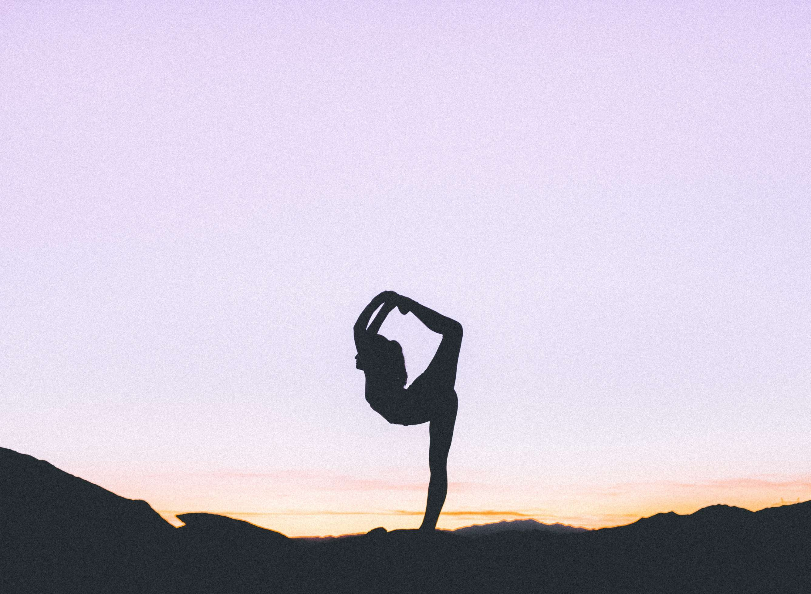
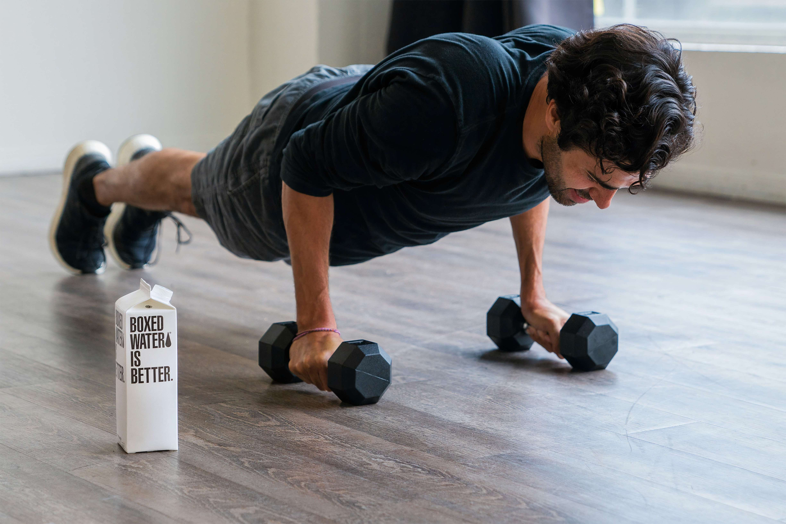
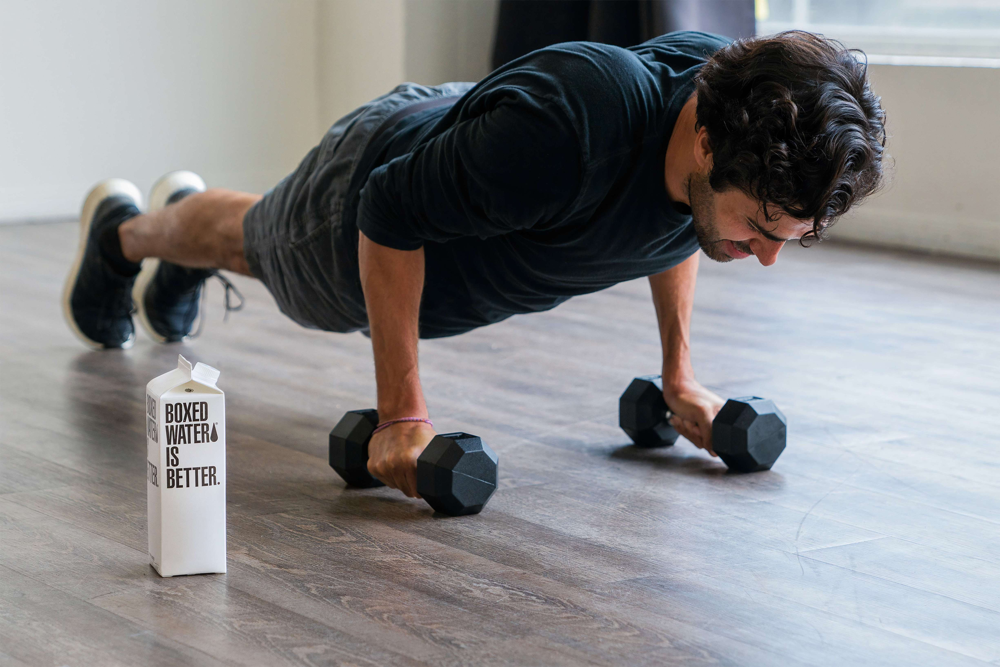

Bite-sized exercise breaks

'E'xercise snacking differs from HIIT in both the duration of the activity burst and the time in between. Whereas the exercise bursts in HIIT can range from 30 seconds to four minutes, in exercise snacking, these are reduced to 20 seconds. The effect of these snacks on fitness was tested in a study of 28 inactive adults. Those randomized to doing three 20-second bike sprints separated by one to four hours of inactivity, three times per day for three days per week experienced a nine per cent improvement in cardiorespiratory fitness. This was comparable to the 13 per cent improvement in the group that conducted the three 20-second bike sprints over a 10-minute period. Now this doesn’t mean going to the gym for a minute several times per day, or needing your own home gym. Or even getting into spandex. The beauty of exercise snacks is that you don’t need any equipment. Even climbing three flights of stairs, three times per day, three days per week for six weeks resulted in a modest increase in fitness in non-exercisers. This small amount of activity is enough to improve insulin metabolism in people who are overweight, confirming earlier research indicating two minutes of moderate walking every 20 minutes reduces blood sugar following a high-sugar test drink.
Fitting in your daily snacks
Exercise snacking isn’t new, although the research and the term are. If you’ve ever been sitting at your computer or watching TV and had the urge to stand up and walk around or stretch, you’ve had an exercise snack. This type of body and brain break is famous among many writers. Dan Brown, author of The Da Vinci Code, spends a minute every hour when writing doing push-ups and sit-ups. And why not? Short bursts of exercise can give you an energy boost and improve your productivity.  What makes the exercise snack different from standing up and stretching or walking to the kitchen, is increasing your heart and breathing rates. But you don’t need to worry about sweating. Moving about for one to two minutes isn’t enough time for you to start. This is makes it easy to do in everyday clothes. Some activities you can do include stair climbing, jogging in place, jumping jacks and burpees. You can even do a brisk walk or jog around the block. If you have a stationary bike or rowing machine, just jump on that for a minute or so. If you want something of longer duration, there’s the Royal Canadian Air Force 11-minute workout plan. Developed in 1959, you can do this program at home without any equipment (although keeping your knees bent during sit-ups is advisable). Researchers recently studied a modified version of this program, and found it effective at improving fitness. It’s still ideal to get in your regular meal of exercise as well as your snacks. But exercise snacks are a great way to build activity into your day. If you think you’ll have a hard time remembering to get up every so often, technology can help. From a simple cooking timer, to the alarm on your phone, to watches that vibrate reminding you to get up. But perhaps the most effective may be using a screen time app on your computer, tablet or phone. Some of these apps lock out your device for a set period of time, giving you the impetus to get up and move.
People Also Read:


 

Fitness Advice That Doesn't Work
‘Ignore bad fitness advice to make the most out of your time at the gym.”
7 Surprising Benefits of Exercise
‘'Y'ou probably have a vague sense that exercise is good for you—and you’ve probably heard that it’s “healthy for the heart.”’
The Mental Health Benefits of Exercise
‘'Y'ou already know that exercise is good for your body. But did you know it can also boost your mood, improve your sleep,’
Why Exercise Is Wise
‘'Y'ou've probably heard countless times how exercise is "good for you." But did you know that it can help you feel good too?’